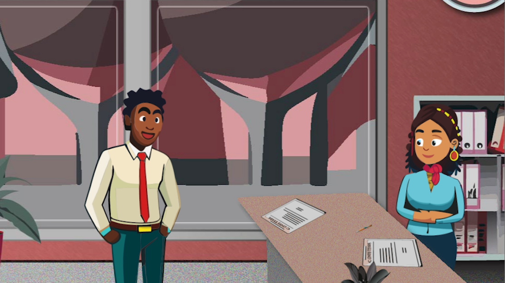

<!DOCTYPE html>
<html lang="de">
<link rel="stylesheet" href="css/style.css">
<link rel="stylesheet" href="css/grid.css">
<link rel="stylesheet" href="css/pong.css">
<link href="https://fonts.googleapis.com/css2?family=Poppins:wght@300;400;600;700&display=swap" rel="stylesheet">
<link rel="stylesheet" href="https://cdnjs.cloudflare.com/ajax/libs/font-awesome/6.0.0/css/all.min.css">
<title>Projekte - Angirillo Fabio</title>
</html>

<!-- header-Section-->
 
<header class="header">
        <meta charset="UTF-8">
        <meta name="viewport" content="width=device-width, initial-scale=1.0">
        <a href="index.html">
            
        </a>  

        <!--Navigationsleiste-->
        <nav class="ul">
            <ul>
                <li><a href="index.html">Start</a></li>
                <li><a href="kenntnisse.html">Kenntnisse</a></li>
                <li><a href="projekte.html">Projekte</a></li>
                <li><a href="bachelorarbeit.html">Bachelorarbeit - KI in der Medienlandschaft</a></li>
                <li><a href="kontakt.html">Kontakt</a></li>
            </ul>
        </nav>
</header>

<!-- Seiteninhalt-->
<body class=" container" >
    <main>
        <h1>Projekte</h1>
        </br>
        <section id="Portfolio" class="section">
            <div class="section-text">
                <h2>Portfolio</h2>
                 </br>
                 <p> Mein Portfolio finden Sie <a href="https://github.com/faangi96">hier</a>.
                 </p>
                 </br>
                 <p>Dort finden Sie Verweise auf die folgenden Projekte aufgelistet auf Google-Drive.</p>
            </div>
        </section>

        <section-box id="Blink 182" class="section-box">
              <div class="section-text">
                  </br>
                  <h2>Blink 182 -  Bored to Death</h2>
                  </br>
                  <p>Im Rahmen meines Studiums wurde zusammen mit meinen Kommilitonin/en ein Musikvideo als Cover nachgedreht, 
                     welches als Teamaufgabe bewertet wurde. Dieses Video solle das Originalvideo "Blink 182 - Bored to Death" 
                     so gut wie möglich nachstellen. Während dieses Projektes war ich für die Requisiten als auch in der Post-Produktion im Editing aktiv.
                     Das fertige Video wurde anschließend auf Vimeo.com hochgeladen und veröffentlicht.
                  </p>
              </div>
              <div style="margin-left: 60px;">
                  <iframe title="vimeo-player" 
                  src="https://player.vimeo.com/video/274471634?h=4124f8643b" width="640" height="360" frameborder="0" referrerpolicy="strict-origin-when-cross-origin" allow="autoplay; fullscreen; picture-in-picture; clipboard-write; encrypted-media; web-share"   allowfullscreen>
                  </iframe>
              </div>
        </section-box>

        <section-box id="Videoinhalte - Skyline Finance" class="section-box">
              <div class="section-text">
                  </br>
                  <h2>Videoinhalte - Skyline Finance</h2>
                  </br>
                  <p>Im Rahmen meiner Praxisphase bei Skyline Finance GbR produzierte ich für das Marketing zwei Erklärvideos,
                     welches sich um die Themen Anschlussfinanzierung und Darlehensformen drehen. Diese wurden von mir geplant, geskriptet
                     und produziert. Die Produktion wurde mithilfe von den Tools der Adobe Creative Cloud (unter anderem auch generative KI) sowie dem Text-to-Speech Tool von Pictory.ai
                     realisiert. Diese wurden danach für die verschiedenen Social Media Kanäle aufbereitet und und zusätzlicher Content (wie Thumbnails)
                     erstellt. Anschließend wurden die Videos auf den jeweiligen Social-Media Plattformen hochgeladen.
                  </p>
                  </br>
                  <p>Mithilfe von Pictory.ai wurden außerdem weitere Videos mtihilfe der KI-Tools von Pictory. Durch die eindrucksvollen und einfach zu bedienenden
                     Tools und vorgefertigten Inhalten konnten nach etwas Nachbearbeitung in der Adobe Creative Cloud mehrere Videos am Tag realisiert werden. 
                  </p>
              </div>
              <div class="grid" style="padding: 0.5rem;">
                    
                    
              </div>
        </section-box>

        <section-box id="Pong-Spiel">
              <div class="container" style="margin-left: 45px">
              <button id="startButton" style="margin-bottom: 20px;" onclick="Starte_Pong()">Spiele Pong!</button>
              <canvas id="Ping-Pong" width="600" height="600"></canvas>
              <script src="js/pong.js"></script>
              </div>
        </section-box>


   </main>
</body>


<!-- Footer-Section-->
 
<footer class="footer">
  <div class="container">
    <p class="footer-text">© 2026 Angirillo Fabio | B.Sc. Medieninformatik</p>

    <ul class="ul">
      <li><a href="impressum.html">Impressum</a></li>
      <li><a href="datenschutz.html">Datenschutz</a></li>
    </ul>
  </div>
</footer>
</html>
